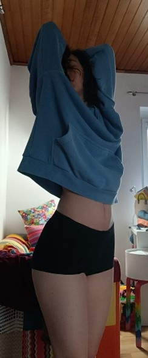
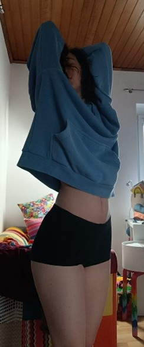

Konzept/Inspiration
Übersetzung von Fotografie in Malerei. Erste Auseinandersetzung mit Realismus in Acrylfarben, mit Schwerpunkt auf Licht und Schatten.
Materialien und Techniken
Acryl auf Leinwand 30x40cm 2025
Herausforderungen/Entdeckungen
Die ursprüngliche Idee war, eine einzelne Leinwand in abwechselnde einfarbige Bereiche (gelb und blau) zu unterteilen, um innerhalb eines Werkes einen Kontrast zu schaffen.
Nachdem ich die gelben Abschnitte fertiggestellt hatte, beschloss ich, die Idee stattdessen auf zwei Gemälde aufzuteilen, damit ich mit Kandinskys Farbtheorie (wie Farben mit Emotionen und Ausdrucksformen zusammenhängen) spielen konnte.
Gelb: Stark, selbstbewusst, energisch
Blau: Sanft, verletzlich, ruhig

 

Konzept/Inspiration
Meine Großeltern hatten immer „Glücksbären“ bei sich, wenn es ihnen nicht gut ging. Nach ihrem Tod wollte ich meiner Mutter ein Andenken schenken, um ihre Erinnerung zu ehren.
Materialien und Techniken
Acryl auf Leinwand 100x150cm 2024
Herausforderungen/Entdeckungen
Experimentieren mit verschiedenen Werkzeugen, um einen abstrakten Hintergrund zu schaffen. Die Arbeit an einer großen Leinwand in einem kleinen Arbeitsraum machte es schwierig, sich um die Leinwand herum zu bewegen und einen Schritt zurückzutreten, um das gesamte Bild zu betrachten.
Die Inspiration

Digitale Konzeptzeichnungg

70x90cm 2024
70x90cm 2024
50x70cm 2024

50x70cm 2025

50x50cm 2025

50x50cm 2024
50x70cm 2025
Konzept/Inspiration
Inneres Kind, abstrakter Hintergrund und zeitgenössische Illustration
Materialien und Techniken
Acryl auf Leinwand
Herausforderungen/Entdeckungen
Herausfinden, wie man Acrylfarbe effektiv verdünnt. Zu viel Wasser machte die Farbe zu flüssig, und verschiedene Medien beeinflussten das Endprodukt. Durch Zugabe von Verdünnungsmittel wurde die Farbe zwar verdünnt, aber matte Farbe wurde dadurch glänzend. Ich habe gelernt, wie man die Menge und Art des Verdünnungsmittels so ausbalanciert, dass die gewünschte Fließfähigkeit und Textur erreicht wird, wobei die Kontrolle über den Farbfluss erhalten bleibt und das gewünschte Aussehen beibehalten wird.
Die Übersetzung grober oder vager Ideen aus Aufträgen in konkrete Konzepte mit sehr wenig Anleitung. Dazu mussten kreative Entscheidungen ohne große Anweisungen getroffen werden. Ich habe gelernt, kreative Freiheit zu schätzen und darauf zu vertrauen, dass die Auftraggeber von meinen Fähigkeiten und Ideen überzeugt waren.

Konzept/Inspiration
Inspiriert von der Tochter eines ehemaligen Arbeitgebers
Materialien und Techniken
Acryl auf Leinwand 2022
Herausforderungen/Entdeckungen
Das Malen während krank verlangsamte den Prozess, aber es lehrte mich Geduld. Es war eine Herausforderung, die Ähnlichkeit von dem Foto einzufangen, da ich kleine Details, die normalerweise übersehen werden, erkennen und reproduzieren musste.


Konzept/Inspiration
Restaurierung von Holzsesseln, inspiriert von Romero Britto
Materialien und Techniken
Acryl auf Holz 2020
Herausforderungen/Entdeckungen
Die Herausforderung bestand darin, sicherzustellen, dass die bemahlten Sessel für den täglichen Gebrauch funktionsfähig und langlebig sind, was ich durch eine Schutzbeschichtung erreicht habe.

Konzept/Inspiration
Experimentieren mit neuen Neon-Wasserfarben
Materialien und Techniken
Wasserfarbe A4 2021
Herausforderungen/Entdeckungen
Das war mein erster Versuch, mich mit Wasserfarben über einfache Formen hinaus zu bewegen. Ich hatte Schwierigkeiten mit dem Skizzieren, da die Bleistiftlinien unter Wasserfarben sichtbar bleiben. Um dieses Problem zu lösen, habe ich meine Skizze mit schwarzem Filzstift auf einem separaten Blatt Papier skiziert, das ich als Vorlage hinter mein Bild an Fenster gab. Der Nachteil dieser Methode war, dass ich kein dickes Aquarellpapier verwenden konnte, sodass ich auf dünnerem Papier arbeiten musste, das durch die Feuchtigkeit wellig wurde.


Konzept/Inspiration
Schulprojekt: Silhouetten
Materialien und Techniken
Wasserfarbe A4 2021
Herausforderungen/Entdeckungen
Um einen wolkenartigen Effekt im Himmel zu erzielen, waren mehrere Versuche erforderlich. Ich experimentierte mit verschiedenen Techniken, bis ich das gewünschte weiche, harmonische Aussehen erreicht hatte. Außerdem habe ich mich damit beschäftigt, wie man mit Wasserfarben Texturen erzeugen kann, und dabei entdeckt, dass sich mit Salzwasser ein Wassertropfeneffekt erzielen lässt.
Email: lia@little-english.at